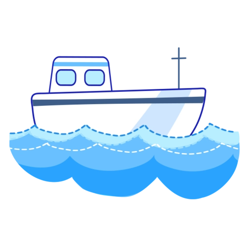

自长江南岸谏壁口经丹阳、常州、无锡、苏州、平望至杭州联通钱塘江，又隔钱塘江南接杭甬运河。
其中，平望至杭州有3条航线，即东、中、西线，如以东线计算，全长323.8公里，中线全长为318公里。
东线是元末形成的老航线，由江苏平望入浙，经嘉兴、石门、崇福、塘栖、武林头至杭州的老航线，航程约130公里，继续通航；
1970年代建成新航线，即中线，江苏平望入浙后，循澜溪塘，经乌镇、练市、新市、塘栖、武林头至杭州，航程缩短至107公里
是现代江南运河浙江段的主航道。西线即頔塘，为通往浙江湖州的分支。